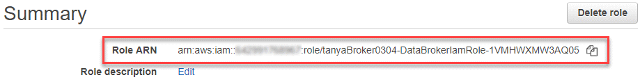

Solicitar cambios en el documento
Solicitar cambios en el documento Editar en GitHub
Editar en GitHub Guía del colaborador
Guía del colaboradorPreparar el origen y el destino
Colaboradores
Compruebe que el origen y los objetivos cumplen los siguientes requisitos.
Redes
-
El origen y el destino deben tener una conexión de red con el grupo de Data broker.
Por ejemplo, si un servidor NFS se encuentra en su centro de datos y existe un agente de datos en AWS, necesitará una conexión de red (VPN o Direct Connect) desde su red hasta el VPC.
-
NetApp recomienda configurar el origen, el destino y los agentes de datos para que utilicen un servicio de protocolo de tiempo de redes (NTP). La diferencia de tiempo entre los tres componentes no debe superar los 5 minutos.
Directorio de destino
Al crear una relación de sincronización, Cloud Sync le permite seleccionar un directorio de destino existente y, a continuación, crear opcionalmente una nueva carpeta dentro de ese directorio. Así que asegúrese de que su directorio de destino preferido ya existe.
Permisos para leer directorios
Para mostrar todos los directorios o carpetas de un origen o destino, Cloud Sync necesita permisos de lectura en el directorio o carpeta.
- NFS
-
Los permisos deben definirse en el origen/destino con uid/gid en archivos y directorios.
- Almacenamiento de objetos
-
-
Para AWS y Google Cloud, un agente de datos debe tener permisos de objeto de lista (estos permisos se proporcionan de forma predeterminada si sigue los pasos de instalación del agente de datos).
-
Para Azure, StorageGRID e IBM, las credenciales introducidas al configurar una relación de sincronización deben tener permisos de objetos de lista.
-
- SMB
-
Las credenciales de SMB que se introducen al configurar una relación de sincronización deben tener permisos de carpeta de lista.

|
El agente de datos ignora los siguientes directorios de forma predeterminada: .Snapshot, ~snapshot, .copy-fload |
requisitos de bloque de Amazon S3
Asegúrese de que su bloque de Amazon S3 cumple los siguientes requisitos.
Ubicaciones de agentes de datos compatibles para Amazon S3
Las relaciones de sincronización que incluyen el almacenamiento S3 requieren un agente de datos implementado en AWS o en sus instalaciones. En cualquier caso, Cloud Sync le solicita que asocie el agente de datos con una cuenta de AWS durante la instalación.
Regiones admitidas de AWS
Todas las regiones están soportadas excepto las regiones de China.
Permisos necesarios para bloques de S3 en otras cuentas de AWS
Al configurar una relación de sincronización, puede especificar un bloque de S3 que resida en una cuenta de AWS que no esté asociado a un agente de datos.
"Los permisos incluidos en este archivo JSON" Debe aplicarse a ese bloque de S3 para que un agente de datos pueda acceder a él. Estos permisos permiten al agente de datos copiar datos desde y hacia el bloque y enumerar los objetos del bloque.
Tenga en cuenta lo siguiente acerca de los permisos incluidos en el archivo JSON:
-
<BucketName> es el nombre del bloque que reside en la cuenta de AWS que no está asociado a un agente de datos.
-
<RoleARN> debe sustituirse por uno de los siguientes:
-
Si se instaló manualmente un agente de datos en un host Linux, RoleARN debería ser el ARN del usuario de AWS para el que proporcionó credenciales de AWS al implementar un agente de datos.
-
Si se ha implementado un agente de datos en AWS mediante la plantilla CloudFormation, RoleARN debería ser el ARN de la función IAM creada por la plantilla.
Para encontrar el rol ARN, vaya a la consola EC2, seleccione la instancia de Data broker y haga clic en el rol IAM en la pestaña Descripción. A continuación, debería ver la página Resumen de la consola del IAM que contiene el rol ARN.

-
requisitos de almacenamiento de Azure Blob
Asegúrese de que su almacenamiento de Azure Blob cumpla los siguientes requisitos.
Ubicaciones de agentes de datos compatibles para Azure Blob
Un agente de datos puede residir en cualquier ubicación cuando una relación de sincronización incluye el almacenamiento de Azure Blob.
Regiones de Azure compatibles
Todas las regiones cuentan con el apoyo de las regiones de China, la gobernadora de los Estados Unidos y el Departamento de Defensa de los Estados Unidos.
Cadena de conexión para relaciones que incluyen Azure Blob y NFS/SMB
A la hora de crear una relación de sincronización entre un contenedor de Azure Blob y un servidor NFS o SMB, debe proporcionar a Cloud Sync la cadena de conexión de la cuenta de almacenamiento:

Si desea sincronizar datos entre dos contenedores de Azure Blob, la cadena de conexión debe incluir un "firma de acceso compartido" (SAS). También tiene la opción de utilizar un SAS al sincronizar entre un contenedor Blob y un servidor NFS o SMB.
El SAS debe permitir el acceso al servicio Blob y todos los tipos de recursos (Servicio, contenedor y objeto). El SAS también debe incluir los siguientes permisos:
-
Para el contenedor de fuente Blob: Leer y enumerar
-
Para el contenedor de blob de destino: Leer, escribir, Lista, Agregar y Crear

|
|
Si decide implementar una relación de sincronización continua que incluya un contenedor de Azure Blob, puede utilizar una cadena de conexión normal o una cadena de conexión SAS. Si utiliza una cadena de conexión SAS, no debe establecerse que caduque en un futuro próximo. |
Azure Data Lake Storage Gen2
Al crear una relación de sincronización que incluya el lago de datos de Azure, debe proporcionar a Cloud Sync la cadena de conexión de la cuenta de almacenamiento. Debe ser una cadena de conexión normal, no una firma de acceso compartido (SAS).
Requisito de Azure NetApp Files
Utilice el nivel de servicio Premium o Ultra cuando sincronice datos con o desde Azure NetApp Files. Es posible que experimente errores y problemas de rendimiento si el nivel de servicio del disco es estándar.

|
Consulte a un arquitecto de soluciones si necesita ayuda para determinar el nivel de servicio adecuado. El tamaño del volumen y el nivel de volumen determinan el rendimiento que se puede obtener. |
Requisitos de caja
-
Para crear una relación de sincronización que incluya Box, deberá proporcionar las siguientes credenciales:
-
ID del cliente
-
Secreto de cliente
-
Clave privada
-
ID de clave pública
-
Frase de contraseña
-
ID de empresa
-
-
Si crea una relación de sincronización de Amazon S3 a Box, debe utilizar un grupo de Data broker que tenga una configuración unificada en la que los siguientes ajustes se establezcan en 1:
-
Moneda del escáner
-
Límite de procesos de escáner
-
Moneda del transferrer
-
Límite de procesos de transferrer
-
requisitos de bloque de almacenamiento en cloud de Google
Asegúrese de que su bloque de Google Cloud Storage cumpla con los siguientes requisitos.
Ubicaciones de agentes de datos compatibles para Google Cloud Storage
Las relaciones de sincronización que incluyen Google Cloud Storage requieren que se ponga en marcha un agente de datos en Google Cloud o en sus instalaciones. Cloud Sync le guía por el proceso de instalación de Data broker cuando crea una relación de sincronización.
Regiones compatibles de Google Cloud
Se admiten todas las regiones.
Permisos para bloques de otros proyectos de Google Cloud
Al configurar una relación de sincronización, puede elegir entre bloques de Google Cloud en diferentes proyectos si proporciona los permisos necesarios para la cuenta de servicio del agente de datos. "Aprenda a configurar la cuenta de servicio".
Permisos para un destino de SnapMirror
Si el origen de una relación de sincronización es un destino de SnapMirror (que es de solo lectura), los permisos de "lectura/lista" son suficientes para sincronizar los datos del origen en un destino.
Unidad de Google
Al configurar una relación de sincronización que incluya Google Drive, tendrá que proporcionar lo siguiente:
-
La dirección de correo electrónico de un usuario que tiene acceso a la ubicación de Google Drive donde desea sincronizar los datos
-
La dirección de correo electrónico de una cuenta de servicio de Google Cloud que tenga permisos para acceder a Google Drive
-
Clave privada para la cuenta de servicio
Para configurar la cuenta de servicio, siga las instrucciones de la documentación de Google:
Al editar el campo ámbitos OAuth Scopes, introduzca los siguientes ámbitos:
-
https://www.googleapis.com/auth/drive
-
https://www.googleapis.com/auth/drive.file
Requisitos del servidor NFS
-
El servidor NFS puede ser un sistema de NetApp o un sistema que no sea de NetApp.
-
El servidor de archivos debe permitir que un host de Data broker acceda a las exportaciones a través de los puertos necesarios.
-
111 TCP/UDP
-
2049 TCP/UDP
-
5555 TCP/UDP
-
-
Se admiten las versiones 3, 4.0, 4.1 y 4.2 de NFS.
La versión deseada debe estar activada en el servidor.
-
Si desea sincronizar datos NFS desde un sistema ONTAP, asegúrese de que el acceso a la lista de exportación NFS de una SVM esté habilitado (vserver nfs modify -vserver svm_name -showmount habilitado).
La configuración predeterminada para showmount es Enabled a partir de ONTAP 9.2.
Requisitos de ONTAP
Si la relación de sincronización incluye Cloud Volumes ONTAP o un clúster de ONTAP en las instalaciones y ha seleccionado NFSv4 o posterior, deberá habilitar las ACL de NFSv4 en el sistema ONTAP. Esto es necesario para copiar las ACL.
Requisitos de almacenamiento de S3 de ONTAP
Al configurar una relación de sincronización que incluya "Almacenamiento ONTAP S3", deberá proporcionar lo siguiente:
-
La dirección IP de la LIF conectada a ONTAP S3
-
La clave de acceso y la clave secreta configurada por ONTAP para usar
Requisitos del servidor SMB
-
El servidor SMB puede ser un sistema de NetApp o un sistema distinto de NetApp.
-
Debe proporcionar a Cloud Sync credenciales con permisos en el servidor SMB.
-
Para un servidor SMB de origen, se requieren los siguientes permisos: List y Read.
Los miembros del grupo operadores de copia de seguridad son compatibles con un servidor SMB de origen.
-
Para un servidor SMB de destino, se requieren los siguientes permisos: List, Read y Write.
-
-
El servidor de archivos debe permitir que un host de Data broker acceda a las exportaciones a través de los puertos necesarios.
-
139 TCP
-
445 TCP
-
137-138 UDP
-
-
Se admiten las versiones 1.0, 2.0, 2.1, 3.0 y 3.11 de SMB.
-
Conceda el grupo "Administradores" con permisos "Control total" a las carpetas de origen y destino.
Si no otorga este permiso, es posible que el agente de datos no tenga permisos suficientes para obtener las ACL en un archivo o directorio. Si esto ocurre, recibirá el siguiente error: "Getxattr error 95"
Limitación de SMB para directorios y archivos ocultos
Una limitación de SMB afecta a directorios y archivos ocultos al sincronizar datos entre servidores SMB. Si alguno de los directorios o archivos del servidor SMB de origen se ocultó a través de Windows, el atributo oculto no se copiará al servidor SMB de destino.
Comportamiento de sincronización de SMB por limitación de falta de sensibilidad en caso
El protocolo SMB no distingue mayúsculas y minúsculas, lo que significa que las letras mayúsculas y minúsculas se tratan como las mismas. Este comportamiento puede provocar errores de copia de directorio y archivos sobrescritos si una relación de sincronización incluye un servidor SMB y los datos ya existen en el destino.
Por ejemplo, digamos que hay un archivo llamado "a" en el origen y un archivo llamado "A" en el destino. Cuando Cloud Sync copia el archivo denominado "a" en el destino, el archivo "A" se sobrescribe con el archivo "a" del origen.
En el caso de los directorios, digamos que hay un directorio llamado "b" en el origen y un directorio llamado "B" en el destino. Cuando Cloud Sync intenta copiar el directorio llamado "b" en el destino, Cloud Sync recibe un error que dice que el directorio ya existe. Como resultado, Cloud Sync siempre falla al copiar el directorio llamado “b.”.
La mejor manera de evitar esta limitación es asegurarse de que sincroniza los datos con un directorio vacío.